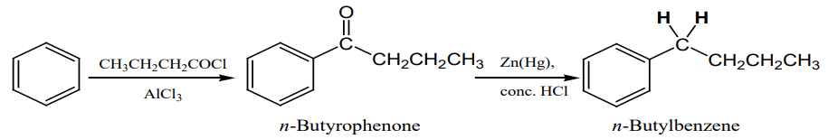
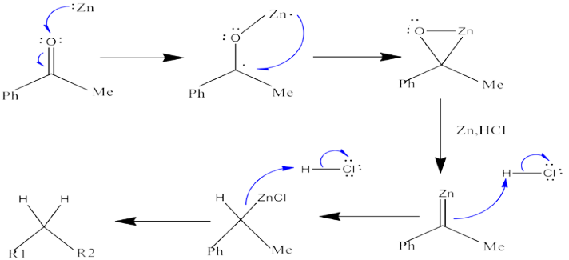

Apex Chemistry
Clemmensen Reduction
Definition
The Clemmensen reduction is most commonly used to convert acylbenzenes (from Friedel-Crafts acylation) to alkylbenzenes,
but it also works with other ketones or aldehydes that are not sensitive to acid. The carbonyl compound is heated with
an excess of amalgamated zinc (zinc treated with mercury; Zn (Hg), and concentrated hydrochloric acid (HCl).
The actual reduction occurs by a complex mechanism on the surface of the zinc.

General Reaction
R-CO-R' → R-CH₂-R' (Zn-Hg / conc. HCl)
Example
Benzaldehyde is reduced to toluene using Clemmensen reduction:
C₆H₅CHO → C₆H₅CH₃
Acetone is reduced to propane:
CH₃COCH₃ → CH₃CH₂CH₃
Mechanism
The reduction takes place at the surface of the zinc catalyst. In this reaction, alcohols are not postulated as intermediates,
because subjection of the corresponding alcohols to these same reaction conditions does not lead to alkanes.
The following proposal employs the intermediacy of zinc carbenoids to rationalize the mechanism of the Clemmensen Reduction:

Key Features
- Reduces aldehydes and ketones to alkanes
- Occurs in strongly acidic medium
- Uses Zn-Hg (zinc amalgam)
- Best for acid-stable compounds
- Complementary to Wolff–Kishner reduction (basic conditions)
Quick Quiz
Applications
- Conversion of carbonyl compounds to hydrocarbons
- Used in organic synthesis for deoxygenation
- Preparation of alkanes from aldehydes and ketones